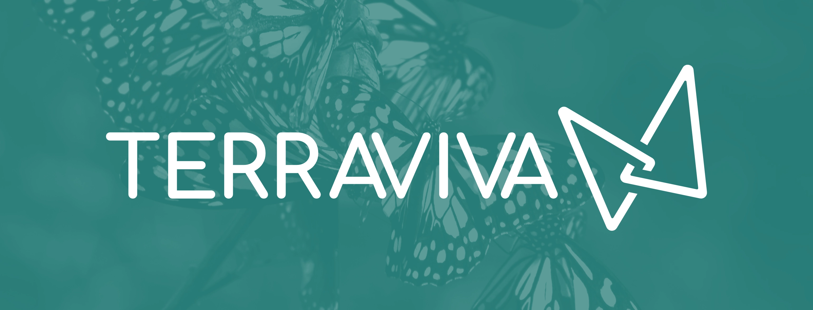
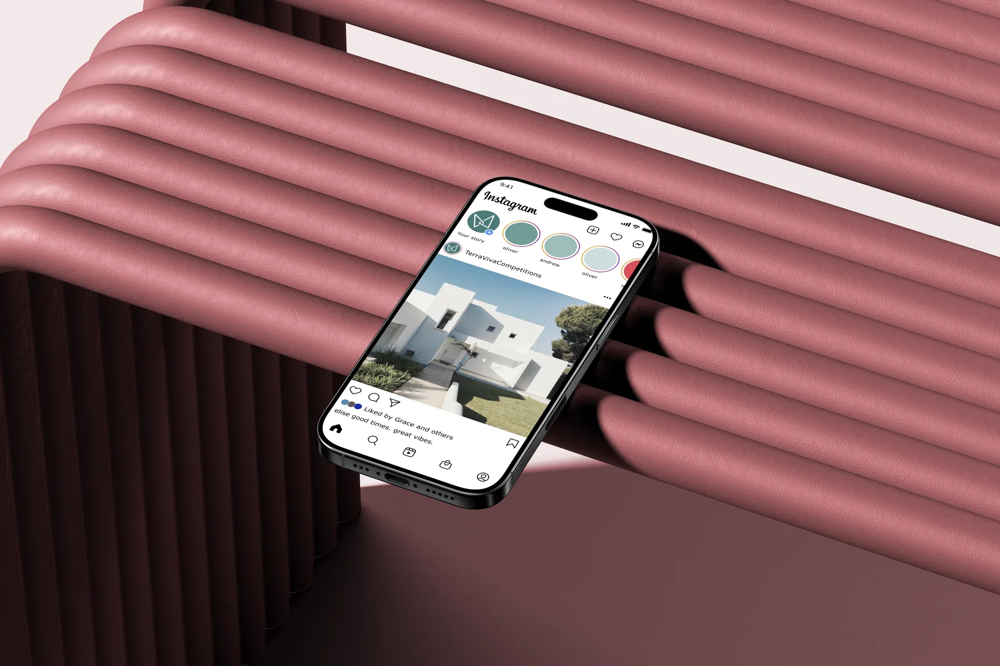
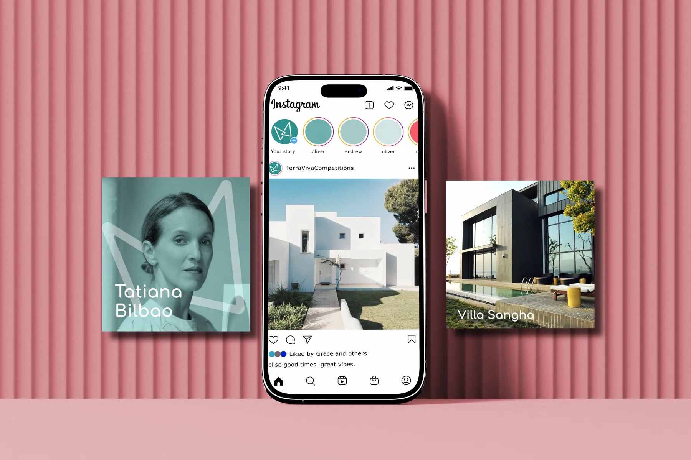
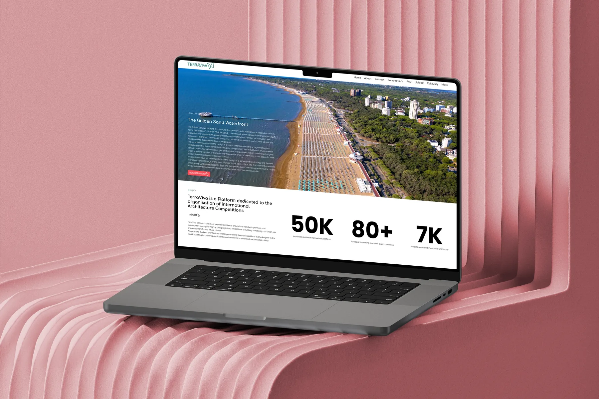

01 — Idea
The concept starts from TerraViva's own philosophy instead: innovative practices built around environmental and social sustainability. Crafted from golden triangles, the butterfly carries that idea directly — transformation, and the balance between nature and geometry. A modern, urban read on what sustainability can look like.
02 — Execution
Typeface sets the tone before a single word is read. Comfortaa Bold gives it structure; Poppins keeps it grounded. Co-created with Leandro Marin.

TitlesComfortaa Bold
TextPoppins
#277C77
#5D9D99
#93BEBB
#C9DEDD
#F84E58
03 — Outcome
Contest entry.


